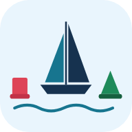

Sailing Theory
Rules of the road and seamanship, ready for your class
Collision Regulations – Right of Way
Lights, Sounds, Day Signs & Flags
Maneuvers
Open Sea
Cheat Sheets
General
Install app
To install on iPhone: tap Share, then “Add to Home Screen”.